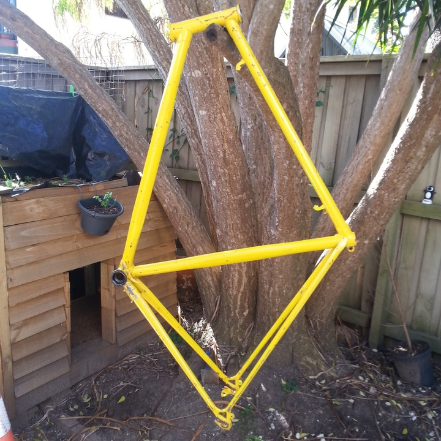

As I said, no-name. Getting prepped for a pretty crappy custom paint jobAll finished and ready to rideHeading off for my first tourMid-tourCould carry a case of beer no troublesStopping in the Olney State Forest before heading down some pretty hairy and abandoned looking roadsOn the western side of the Olney State Forest. I did see cows, the sign does not lieKiki's Delivery Service style